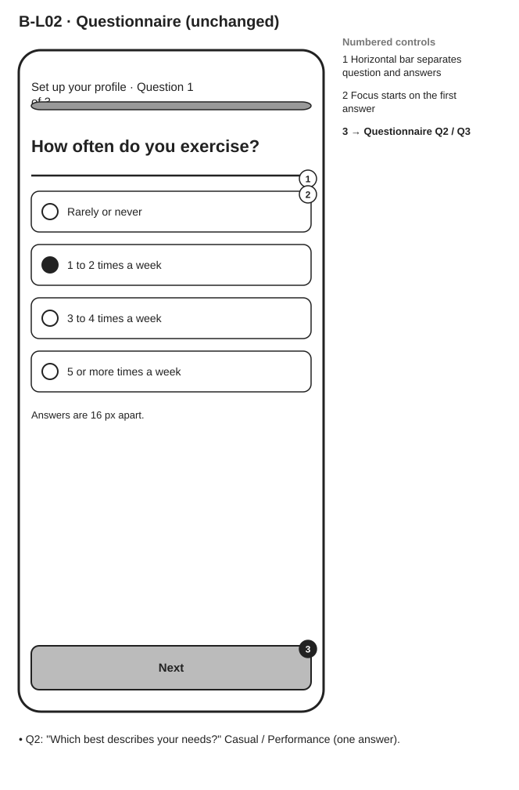

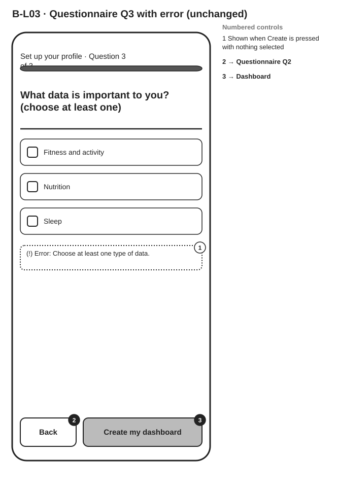


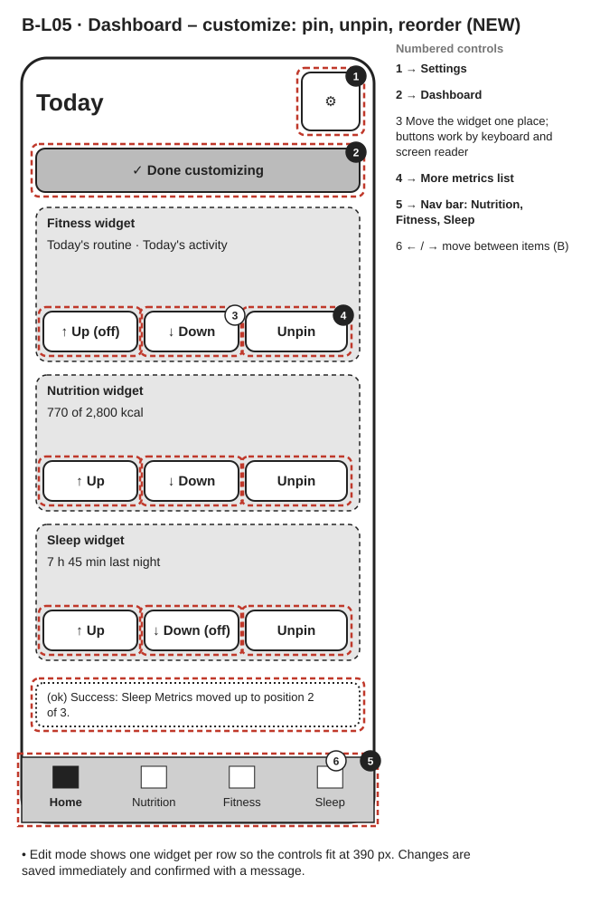

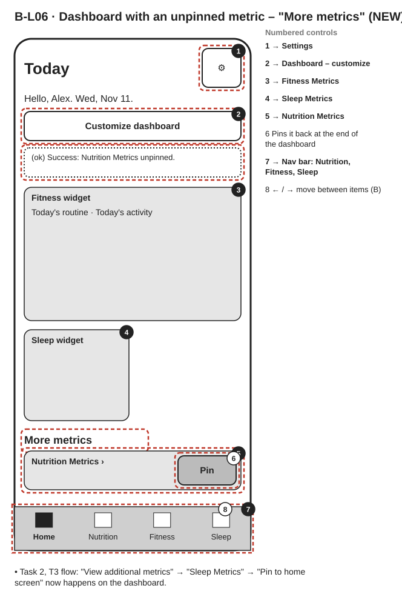

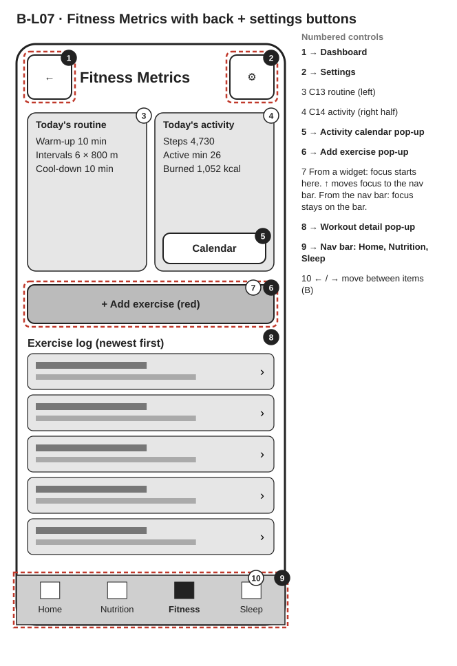


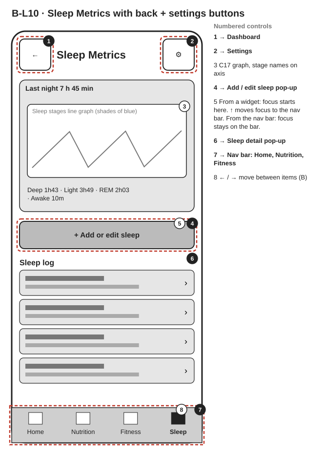

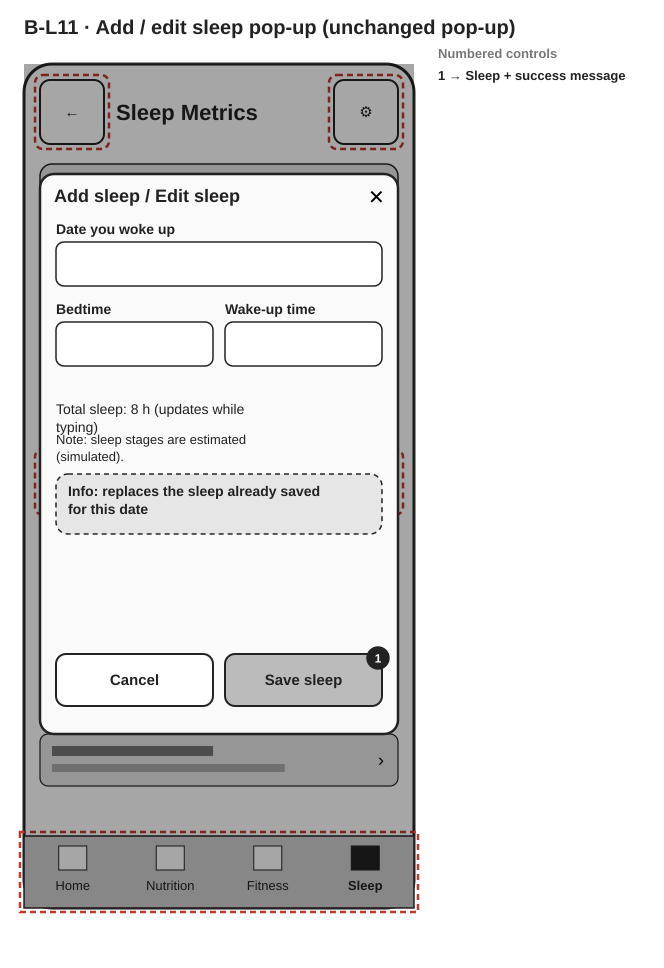

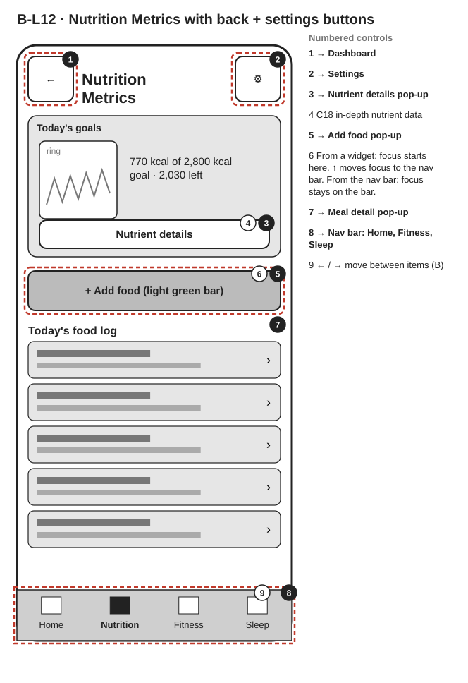

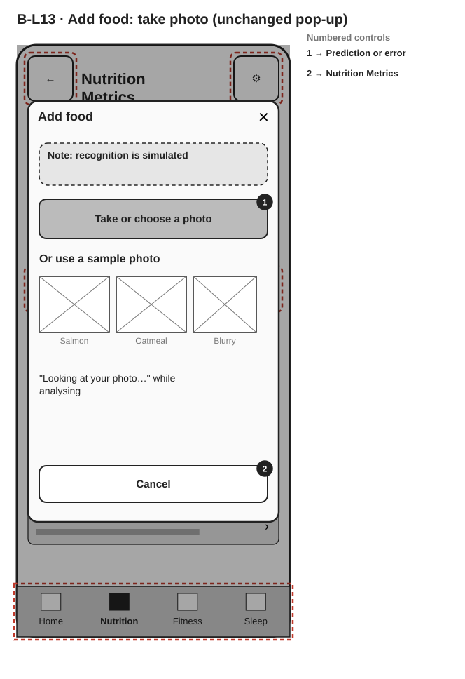

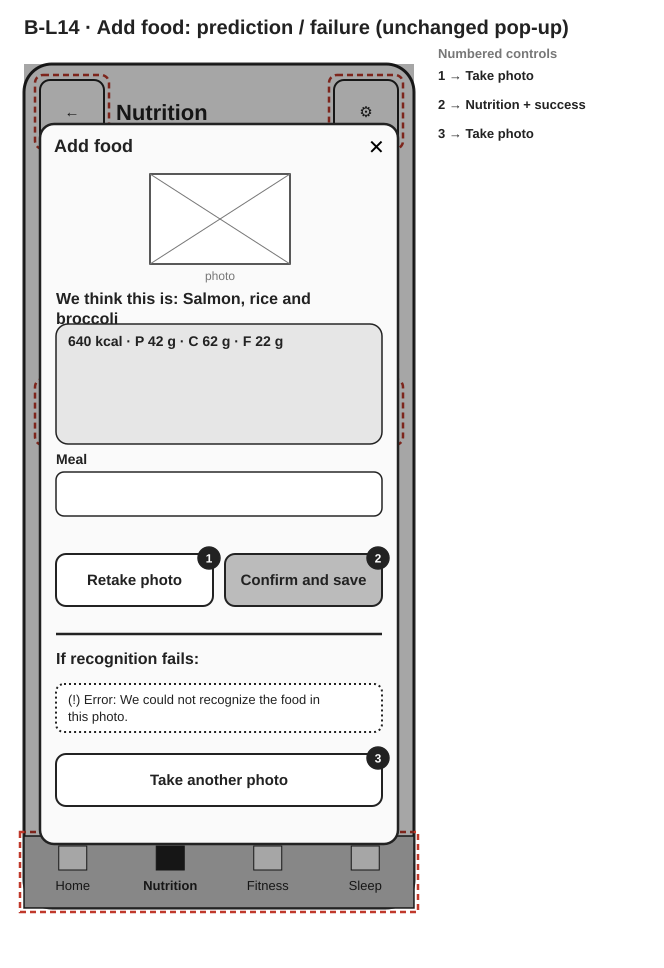

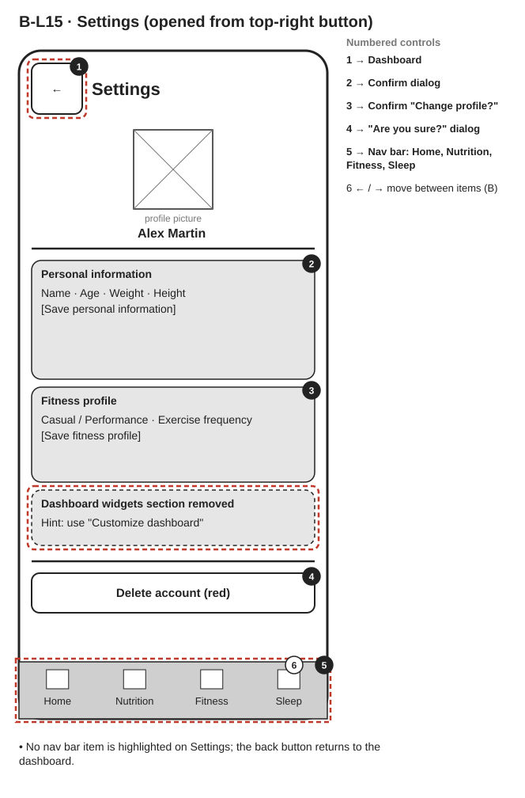

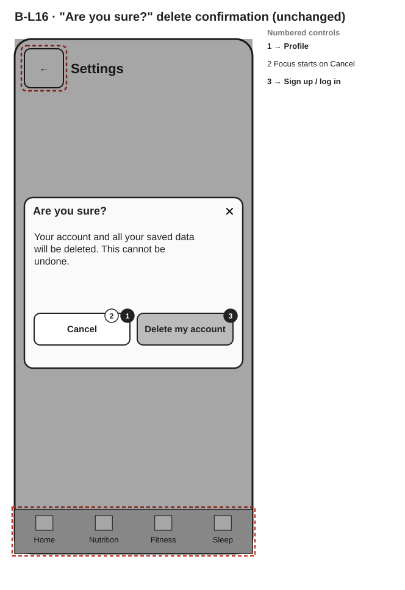
Output B starts from the Output A wireframes and applies the Output B changelog. Red dashed outlines mark what changed: back button (top-left), Settings button (top-right) instead of the Profile nav item, pin / unpin / reorder on the dashboard, and the keyboard rules (↑ from the main action to the nav bar; focus stays on the nav bar when it was used).
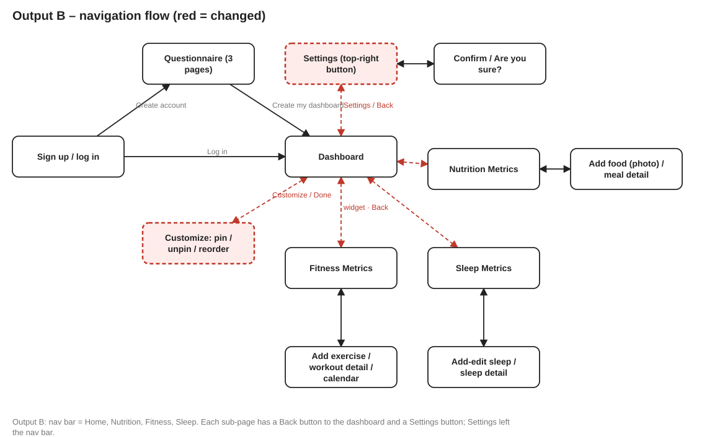











